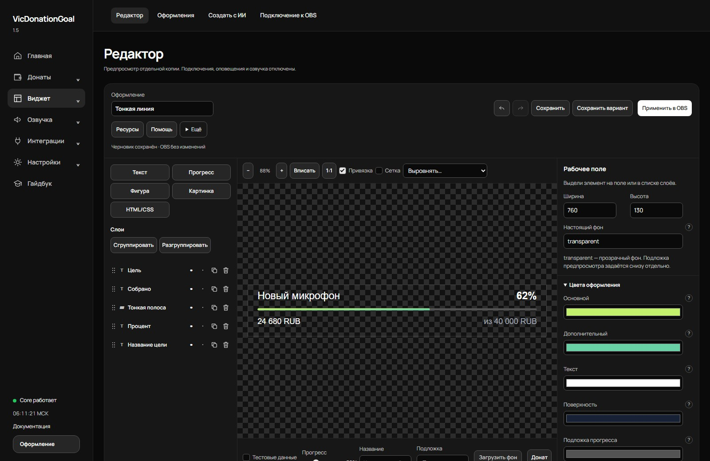
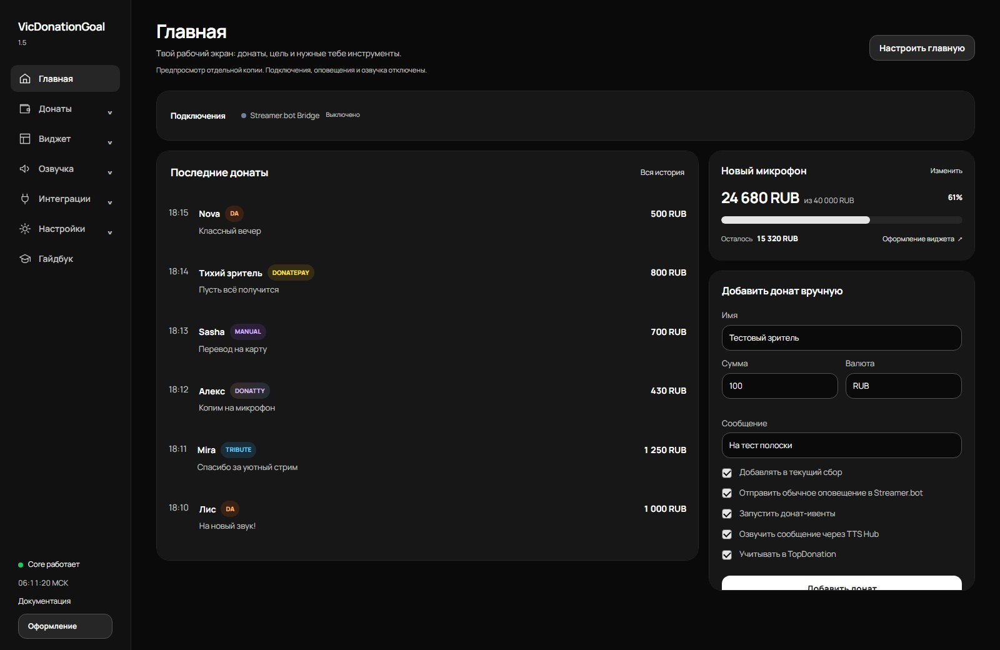

VicDonationGoal
1.5 · Открытая бета
Донаты из разных сервисов — в одном сборе и общей истории. Своё оформление в OBS, оповещения и озвучка — в той же панели.
Можно использовать даже с одним DonationAlerts: своё оформление цели, история, TopDonation и настройка озвучки. Донаты приходят через привычные сервисы, а VicDonationGoal локально объединяет их события и учёт.
Windows 10/11 · Python 3.11+ · OBS Studio
Бесплатно · Открытый исходный код · Лицензия MIT
Донаты из разных сервисов
в одном месте
Общий сбор, история и TopDonation для всех подключений. Управляйте учётом каждого доната в одной панели. Переводы на карту добавляйте вручную — с теми же настройками учёта и оповещения.
- DonationAlerts
- Donatty
- Tribute Experimental
- DonatePay
- Donate.Stream
- DonateX
- StreamElements Beta
- Streamlabs Beta
У каждого подключения свои параметры, логи и состояние. Beta и Experimental отмечают интеграции, которым особенно полезно тестирование на разных аккаунтах.
Редактор вашего
донат-гола
Полоса, кольцо или своя композиция. Восемь готовых оформлений состоят из обычных слоёв: каждый можно передвинуть, изменить или заменить.
Редактор, в котором
видно результат
Текст, фигуры, изображения и прогресс. Цвета, локальные шрифты, маски, группы и анимации. Редактируйте черновик спокойно: в OBS оформление попадёт после применения.

Создавайте
вместе с ИИ
Опишите оформление любой внешней нейросети. Программа подготовит совместимый запрос, примет ответ целиком и покажет результат. Для необычной графики доступны собственные HTML, CSS и JavaScript.
Форматы и возможностиПомощь рядом
с редактором
Гайдбук внутри приложения объясняет слои, маски, ресурсы и создание с ИИ. Можно начать с маленького изменения готового оформления, а затем собрать своё. Вариант переносится ZIP-файлом вместе с ресурсами.
Обычные слои остаются редактируемыми. Цельный HTML автоматически на отдельные слои не разбивается.
Главная, на которой
нужное вам
Следите за последними донатами, держите под рукой ручной ввод и цель. Добавляйте модули, меняйте их размер и расположение. Остальные инструменты доступны через разделы.

Темы и цвета интерфейса
Светлый и тёмный режимы, Monocrome и VicWander. Выбирайте основу и акцент независимо из 26 палитр, регулируйте насыщенность основы. Оформление админки и виджет для зрителей настраиваются отдельно.
Оповещения через Streamer.bot
Подключите Streamer.bot через отдельную вкладку. Выберите Action, проверьте связь и отправьте тестовое оповещение. Гайдбук проведёт от сцены OBS до готового примера — звук можно добавить по желанию.
Озвучка сообщений
Спасибо за стрим, удачного вечера!
TTS Hub выбирает голосовой профиль и ставит сообщения в очередь. Speaker.bot, Microsoft Edge, Yandex SpeechKit, XTTS Local и собственный HTTP-провайдер. Настройте фильтры текста, правила и резервный движок.
Отдельные провайдеры требуют своей настройки, сервера или учётных данных. Speaker.bot запускается отдельно.
Параметры озвучкиДанные остаются
на вашем компьютере
История, подключения и оформления хранятся локально. Полный бэкап помогает восстановить программу, а перенос из старой папки сохраняет данные при обновлении.
Для поддержки есть отдельный диагностический отчёт с маскировкой секретов. Полные бэкапы и настроенную папку публиковать не нужно.
Хранение и перенос данныхПомогите сделать программу лучше
1.5 доступна всем как открытая бета. Программой уже можно пользоваться, но ещё нужны проверки на разных компьютерах, аккаунтах и настройках стрима.
Опыт тестирования и программирования не требуется. Расскажите об ошибках, непонятных настройках или неудобствах. По возможности лично помогу с установкой и подключением — пишите в Telegram @Zulf3.
- Распакуйте архивВыберите отдельную папку и запустите
00_INSTALL_ALL.batдля установки зависимостей. - Запустите программу
01_START_ALL.batоткроет локальные модули. В админке подключите нужные сервисы. - Добавьте виджет в OBSАдрес источника «Браузер» находится в разделе подключения виджета к OBS.
Уже пользуетесь старой версией? Остановите обе установки и запустите 16_UPDATE_FROM_OLD_VERSION.bat из новой папки. Подробнее об обновлении.